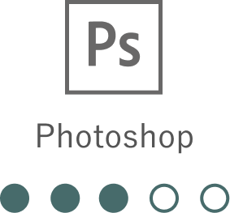
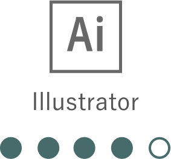
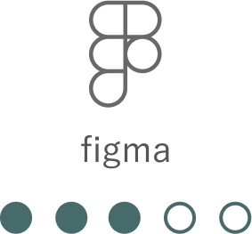
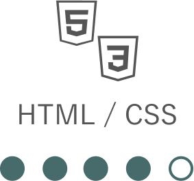
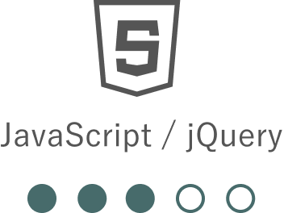

桜木 英雄 / Hideo Sakuragi
1993年10月27日生まれ 広島県広島市出身
経歴
2016年3月 広島修道大学 人文学部(心理学専攻) を卒業後、電気機器メーカーにて、営業(ルート営業)として3年間勤務しました。その後自身の更なる営業力向上などを目的とし、株式会社リクルートに契約社員として入社。ホットペッパービューティー (美容サロンのネット予約サイト)における新規開拓営業および既存顧客における新規集客や売上の向上など深耕営業に従事。3年半の契約満了後、webデザイナーを目指してオンラインスクールに通い始めました。
なぜWEBデザイナーを
目指したのか？
なぜwebデザイナーを目指したのか？理由は2つあります。
【1つ目】は、前職にて私はホットペッパービューティーを通して毎月50件以上の美容サロン様のありたい姿(夢・目標)や課題と向き合ってきました。昨今、SNSの発達などもあり多種多様な広告手法がありますが、お客様によって適切な媒体は異なると感じています。自身が制作側に立ち、制作したものを通すことで多角的なご提案やよりお客様が必要とするものを届けたいと考えるようになりました。
【2つ目】は、変化の激しいこの時代において、「専門スキルを持つ」ことの意義を感じたためです。その中でも、①現在ネット社会であること②自身がクリエイティブなことに関心があったこと③特に流行の移り変わりの早いIT業界においても、自信が学ぶことを辞めなければ常に成長し続けられること
以上のことから、webデザイナー・フロントエンドエンジニアへの道を歩むことを決意しました。
-

写真の色調補正や合成など、主に画像編集ソフトとして活用することができます。
-

ロゴ・チラシやバナーの作成をすることができます。また、webサイトのデザインカンプもIllustratorで作成可能です。
-

webサイトのデザインカンプの作成が可能です。このポートフォリオサイトのデザインもfigmaを使って作成しました。
-

レスポンシブ対応したwebサイトを作ることができます。また、誰が見ても分かりやすいコードを書くよう意識しています。
-

webサイトにスライダーやスムーススクロール、ドロップダウンなどを初めとする動きを付けることができます。